Al simularlo, seremos capaces de conocer el valor de todas las tensiones eléctricas que vienen representadas (V1, V2, V3 y V4) midiéndolos mediante un multímetro virtual.
Sigue los pasos detenidamente y en orden para aprender a hacerlo bien, porque la tarea que tendrás que hacer será muy parecida a esta práctica:
1 - Crear el proyecto
Crea un nuevo proyecto en TinkerCAD de tipo circuito. Para ello, pulsa sobre el botón "+ Crear" y selecciona "Circuito":
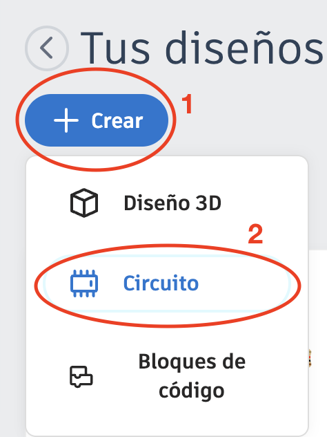
2 - Renombrar proyecto
Cambia el nombre del proyecto a "Práctica guiada 1". TinkerCAD le pone siempre un nombre aleatorio a cada proyecto nuevo y es importante cambiarlo para saber a qué tarea corresponde. Puedes cambiar el nombre haciendo clic sobre el nombre aleatorio que le ha puesto TinkerCAD y que se encuentra en la parte superior izquierda de la página.
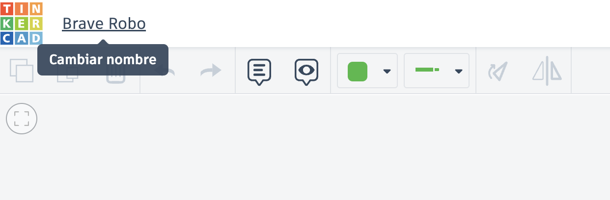
3 - Añadir componentes básicos
Añade a tu proyecto una "placa de pruebas pequeña" y las 6 resistencias que necesitarás. Las encontrarás entre los componentes básicos a la derecha de la pantalla. Simplemente arrástralas a tu zona de trabajo:
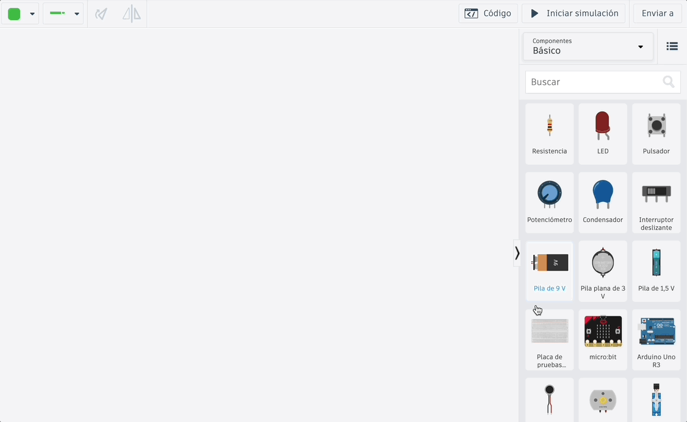
4 - Modificar nombres y valores de componentes
Modifica los nombres y los valores de las resistencias para que sean los que aparecen en el diagrama del circuito. Aquí te enseño a cambiar R1. Repite lo mismo para dar los valores al resto de las resistencias:
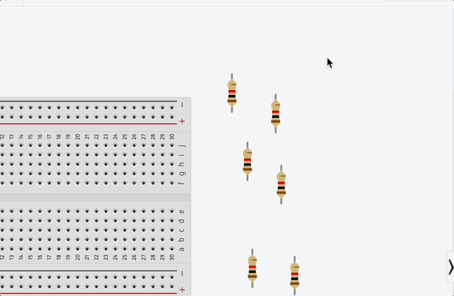
Fíjate que, al modificar el valor de una resistencia, sus bandas de colores cambian para mostrar el valor real, como hemos visto. Cuando cambies todos los valores, te deberán quedar así:
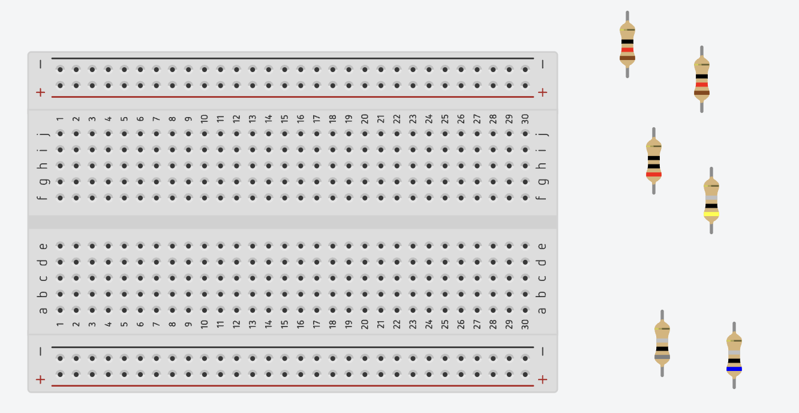
5 - Añadir otros componentes
Añade la fuente de alimentación del circuito. Como necesitamos una fuente de 21 voltios, no podemos usar las pilas que vienen entre los componentes básicos (solo hay de 9 V, de 3 V y de 1,5 V). Utilizaremos un componente llamado "Suministro de energía". Para localizarlo deberás mostrar todos los componentes de TinkerCAD, no solo los básicos. En esta animación puedes ver cómo hacerlo. ¡Recuerda cambiar el nombre del componente a "V" y su valor de tensión a 21 voltios!
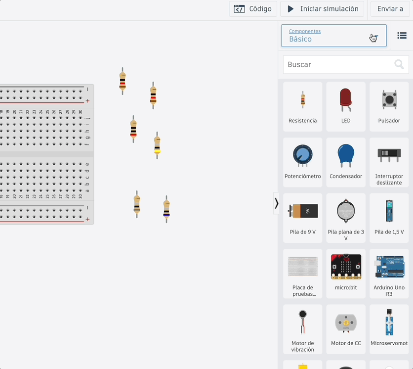
6 - Realizar conexiones mediante cables virtuales
Conecta la fuente a la protoboard mediante cables. Cuando no tengamos más remedio, usaremos cables virtuales para conectar dispositivos entre sí.
Para poner un cable virtual, solo hay que hacer clic con el ratón en un terminal de un componente y volver a hacer clic en otro para que queden unidos por un cable. Si vas haciendo clic por el camino, puedes hacer que el cable se vaya doblando y quede más organizado todo (si te queda algún tramo torcido, siempre puedes arrastrar los puntos de giro para que quede todo derecho). Además, puedes cambiar los colores de los cables para que te sea más sencillo identificarlos cuando tengas muchos. Te voy a enseñar a hacer todo esto haciendo lo siguiente:
- Conecto el terminal positivo (rojo) de la fuente a cualquier orificio del bus positivo (+) de la parte de arriba de la protoboard, utilizando un cable rojo.
- Conecto el terminal negativo (negro) de la fuente a cualquier orificio del bus negativo (-) de la parte de abajo de la protoboard, utilizando un cable negro.
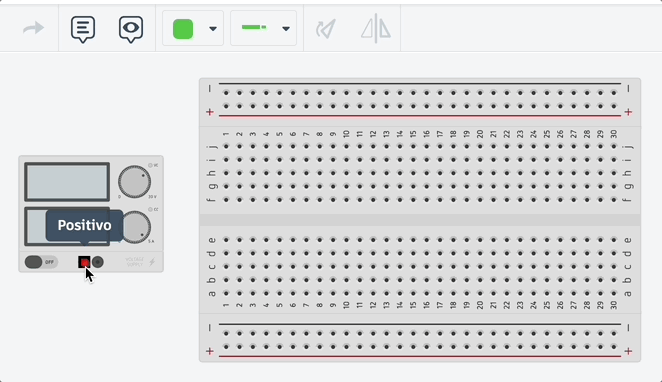
Fíjate cómo podemos enderezar fácilmente los tramos que nos hayan quedado torcidos.
7 - Realizar conexiones mediante la protoboard
Conecta todos las resistencias entre sí para formar el circuito. Para hacer las conexiones vamos a usar la placa protoboard siempre que sea posible (recuerda que, con los componentes reales, no podemos unir los cables con sus patillas directamente).
Como esta es la parte más complicada de toda la práctica, lo vamos a ir haciendo por partes. Yo te propongo una posible solución, pero puede haber muchas otras también válidas. Lo importante es que vayas entendiendo cómo se conectan entre sí por dentro de la protoboard para que seas capaz de montar cualquier circuito.
No es necesario que utilices exactamente los mismos orificios de la placa que te muestro en los ejemplos. Lo importante es que coincidan los que estén en la misma vertical (o en la misma horizontal en el caso de los orificios de los buses de alimentación)
- Conexión de R1 y R2. Estas dos resistencias están conectadas al terminal positivo de la fuente por un lado y conectadas entre sí por el otro. Podemos hacer esa conexión así (he añadido un cable verde para conectarlas entre sí, para que sea más fácil de entender, pero se podrían conectar sin cables utilizando orificios en la misma tira de la placa, colocados en vertical):
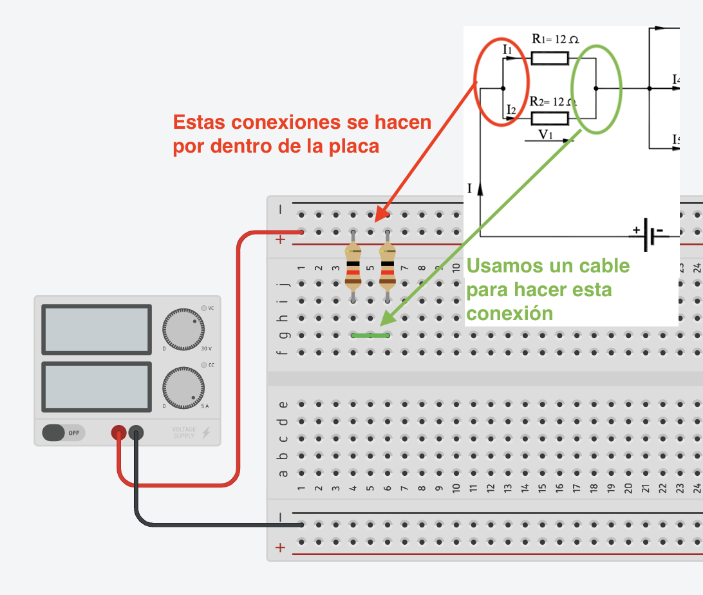
- Conexión de R3 y R4. En este caso, R3 está conectada a la conexión de R1 y R2 por un lado y a R4 por el otro. Por su parte, R4 está conectada al negativo de la fuente de alimentación. Una posible conexión sería esta:
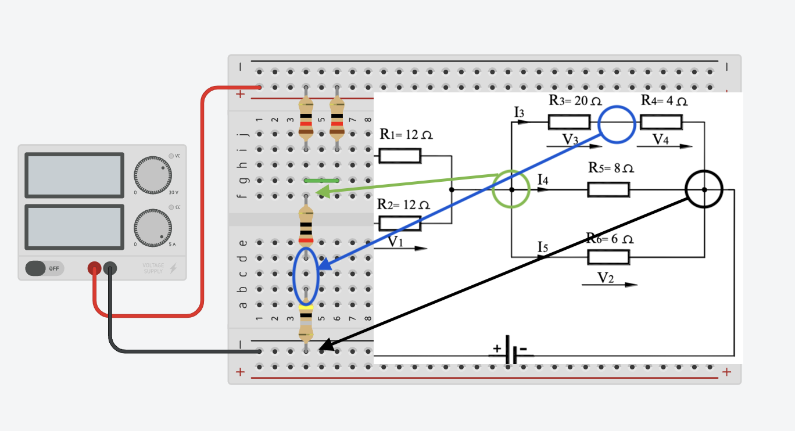
Fíjate que ahora hemos conectado todo sin necesidad de usar cables. Solo con las conexiones internas de la protoboard.
- Conexión de R5 y R6. Para conectar estas resistencias sí vamos a utilizar cables, para poder separar los componentes y que sea más cómodo el montaje en la protoboard. Te indico en la imagen a qué conexión corresponde cada cable:
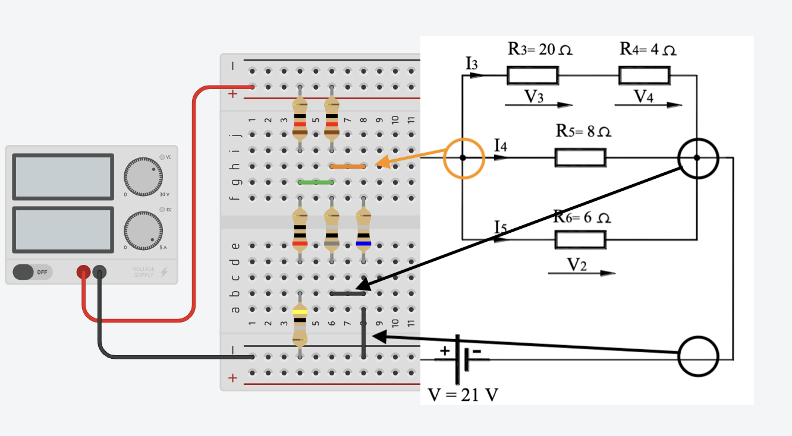
Fíjate que he utilizado el color negro para todos los cables que van al negativo de la fuente. Esto es algo que deberás intentar respetar siempre. Solemos usar el color rojo para las conexiones al positivo y negro para las conexiones al negativo. Para todo lo demás, puedes usar el color que quieras (excepto rojo y negro).
Te dejo el aspecto final que tendrá el circuito, pero es importante que no te limites a copiarlo sin más, sino que debes intentar comprender por qué hemos colocado así los componentes. Si tienes dudas, pregúntamelas en clase, pero es muy importante que comprendas bien este paso para poder hacer bien la tarea que viene a continuación.
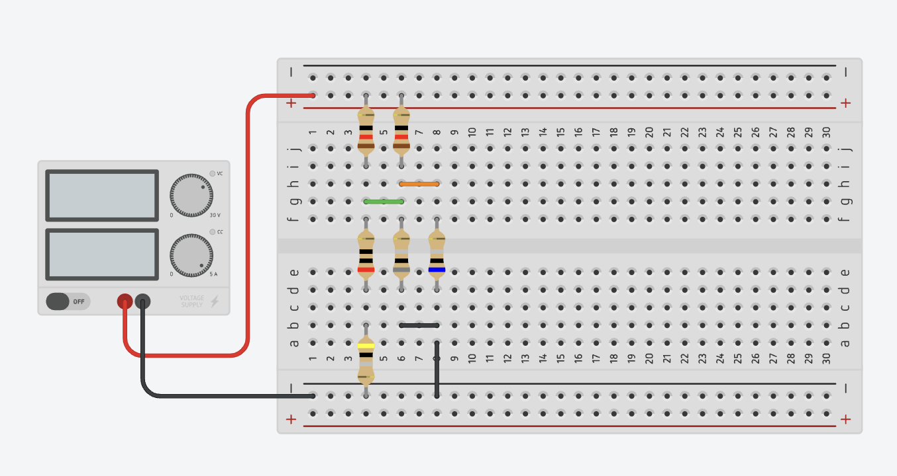
Si nos fijamos sólo en las partes de la protoboard que conducen la electricidad, veremos más claramente el circuito que hemos montado:
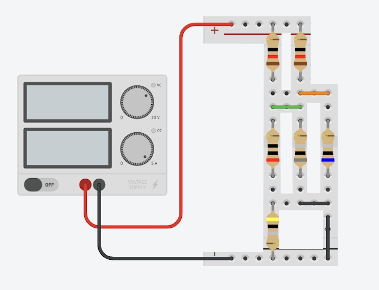
8 - Simular el circuito
Ha llegado el momento de simular el circuito para ver los valores del mismo. Para iniciar la simulación en TinkerCAD solo tienes que pulsar el botón Iniciar simulación, que tienes en la parte superior derecha de la pantalla:
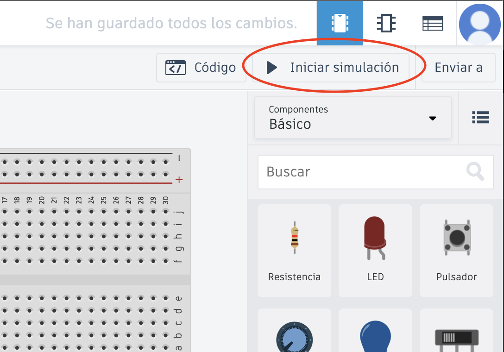
En este ejemplo, al iniciar la simulación lo que verás es que la fuente de alimentación muestra 21 voltios de tensión y 2,33 amperios de intensidad de corriente. Si el valor de la intensidad no es 2,33 o recibes algún error, es que no has conectado correctamente el circuito o no le has dado el valor correcto a las resistencias. Revisa todo bien antes de seguir.
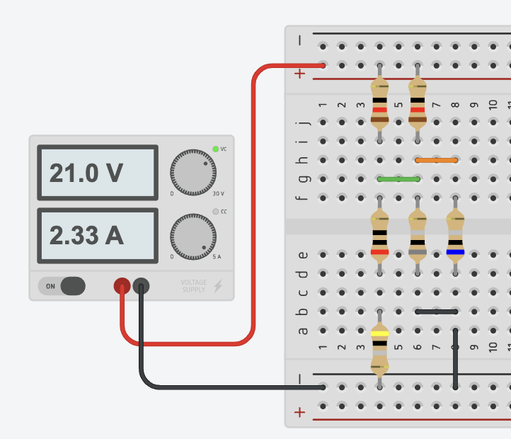
9 - Medir las magnitudes eléctricas
Este es, por fin, el último paso de esta práctica guiada. Vamos a medir los valores de V1, V2, V3 y V4 directamente en el circuito. Para hacerlo, utilizaremos un multímetro, que puedes encontrar al final de los componentes básicos de TinkerCAD.
El multímetro puede medir voltaje (V), resistencia (R) o intensidad de corriente (A - amperaje). Para elegir qué queremos medir, basta con seleccionarlo y desplegar el menú llamado "Modo". El dibujo del dispositivo cambiará para marcar la A, la V o la R según sea su modo de funcionamiento:
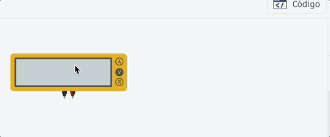
Para medir los voltajes que nos piden, conectaremos los cables del multímetro a los puntos entre los que queremos medir el voltaje.
Por ejemplo, para medir V1, tenemos que conectar los extremos del multímetro a los extremos de R2 (o de R1). El conector rojo del multímetro lo conectaremos al extremo de R2 que va al positivo de la fuente y el negro al otro (si los conectamos al revés, lo único que pasará es que el valor medido por el multímetro saldrá negativo en vez de positivo). Te enseño aquí como medir V1:
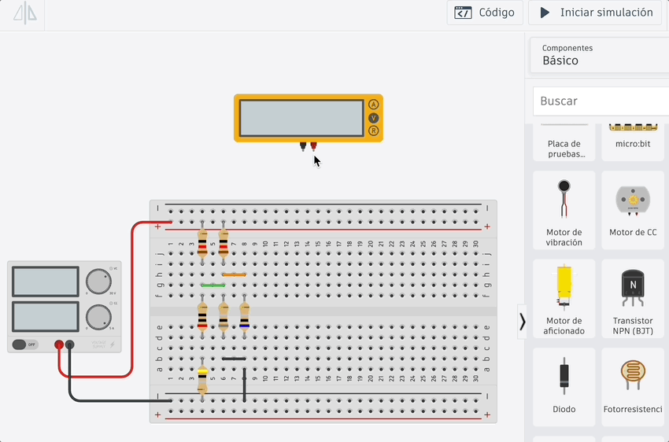
Fíjate que he cambiado el color de los cables para que sean el mismo que el de cada terminal. Esto no es obligatorio pero siempre es recomendable hacerlo.
Recuerda pulsar "Iniciar simulación" para ver el valor medido. Si tienes que hacer cambios en tu circuito, primero debes para la simulación.
Para medir V2 solo tenemos que quitar los cables de donde están y colocarlos en los extremos de R6. Aquí te enseño cómo hacerlo:
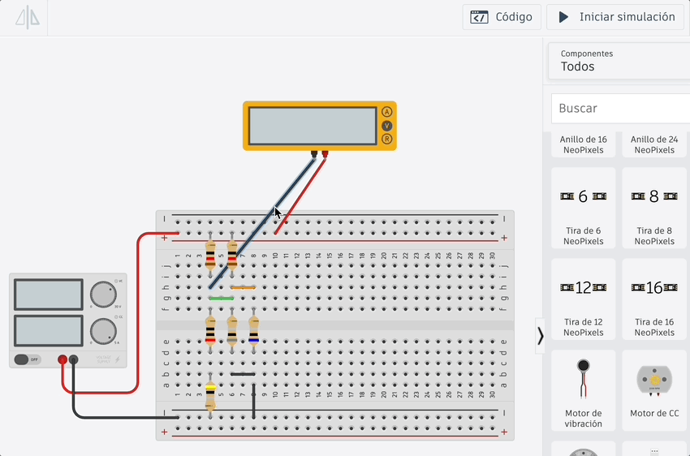
Intenta medir por tu cuenta los otros voltajes V3 y V4, a ver qué valores obtienes.
Podemos indicar los valores que vayamos obteniendo mediante una nota de texto. Puedes añadir las notas de texto que desees a tus circuitos de TinkerCAD utilizando este botón de la barra de herramientas:
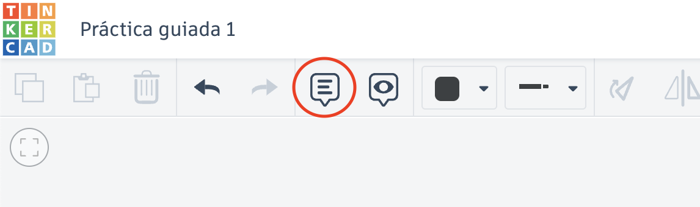
Una vez añadida la nota, puedes editarla cuando quieras para escribir lo que quieras. Por ejemplo, los valores de los voltajes V
1 y V
2 los podríamos escribir así en una nota:
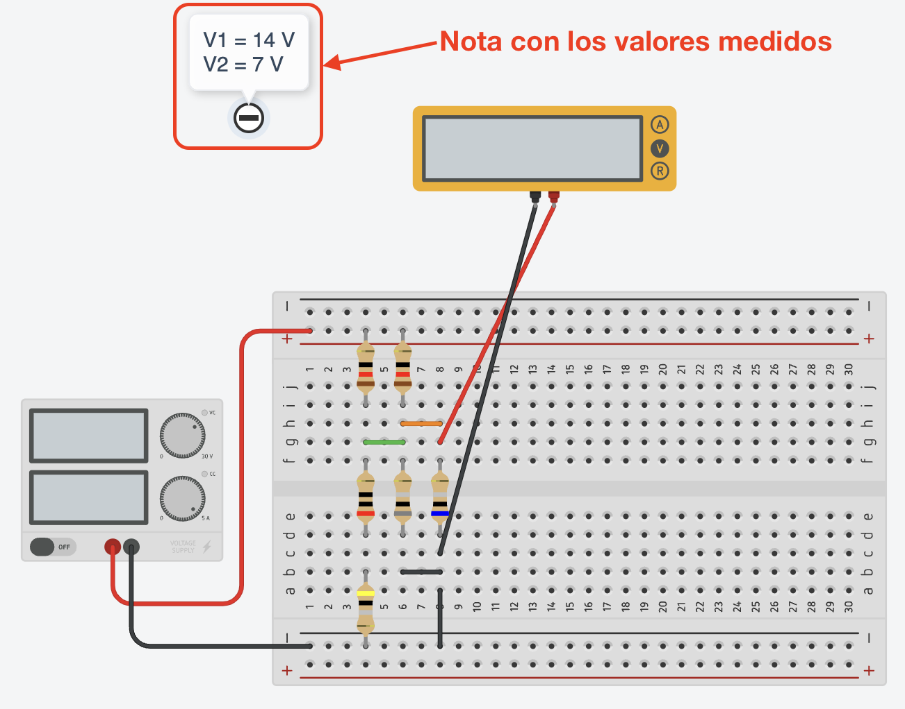
¡Completa tu nota con los valores de V3 y V4!